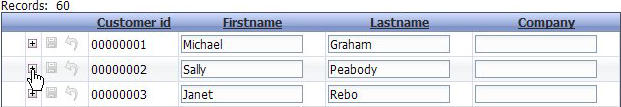
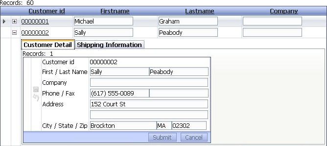
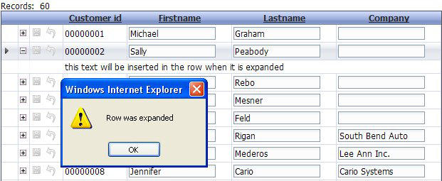

Row Expander
PAGE ADDED TO GRID PROPERTIES IN DETAIL
Property name: 'Has row expander' ('Properties' pane)
The row expander is another method to show information related to a record on a row. A column is added with a 'plus' icon that can be selected to 'expand the row'. A minus icon will be shown after the row is expanded that can be selected to close the expanded row. There are 2 row expander types.
The 'LinkedGrids' option allows selecting one or more grid components that can be linked to the current record in the row. The linked grids can be shown in tabs, or an accordion control.
The 'CustomEvent' will cause the grid event 'OnExpandRow' to fire. This event sets a number of properties such as e.html and e.javascript. The contents of the expanded row will be set to e.html. If the e.javascript is not null, the javascript contained in this property will be executed. There are other optional properties available to allow a developer to create a custom display that can be linked to the current record.
Multiple records can have their row expanded, allowing the user to view additional information about multiple records.
If the 'Mode' property is set to 'Single', then only one row can be expanded at a time. If a row is expanded and you expand another row, the currently expanded row will be collapsed.
|  |
|
Selecting the row expander icon to open the expanded section |
|  |
|
Expanded row with 2 grids in a tabbed control with the tabs on top. |
|  |
|
CustomEvent selected using the example code in the 'OnExpandRow' event |
Note that if a child grid in an Row Expander is updateable, the linking fields must also be updateable.